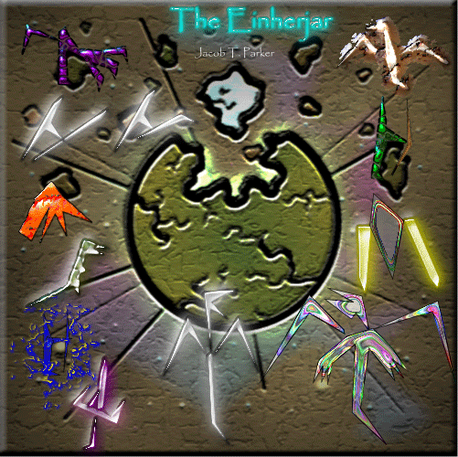

The Story Begins...
It was a darker than usual, and stormy day.
- Reptile Man
- Reptile Man II: Hunt of the Talismans
- Reptile Man III: Dawn of the Talismans
- Reptile Man IV: The Flames of Rorzron
- Reptile Man V: The Destiny of the Talismans II. Talisman Series
- Talisman VI
- The Creature of Ancient Destruction III. The Legend of Four Series
- The Legend of Four
- The Four Legend
(The following is a chronological list, the links to the stories are above.)
I. Reptile Man Series
